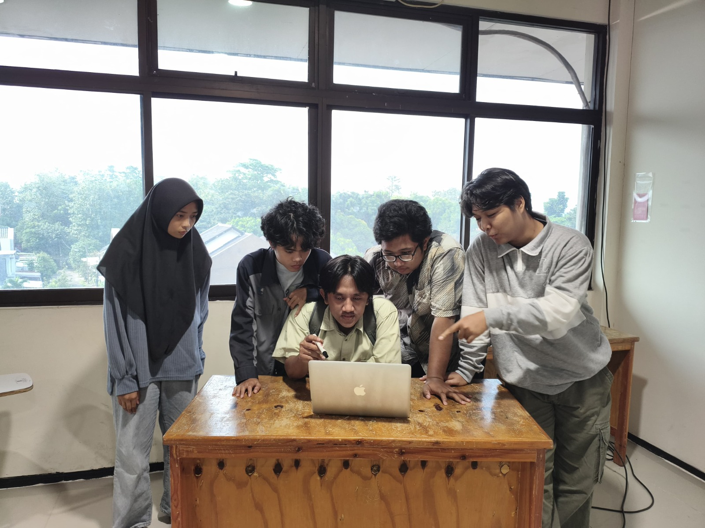
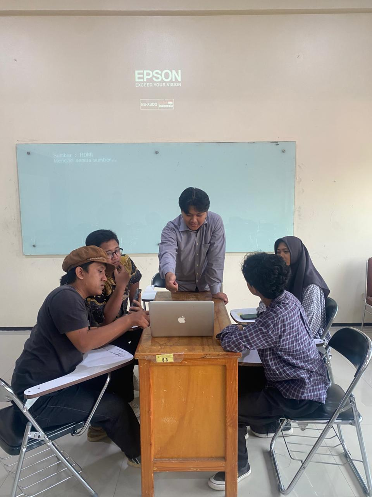
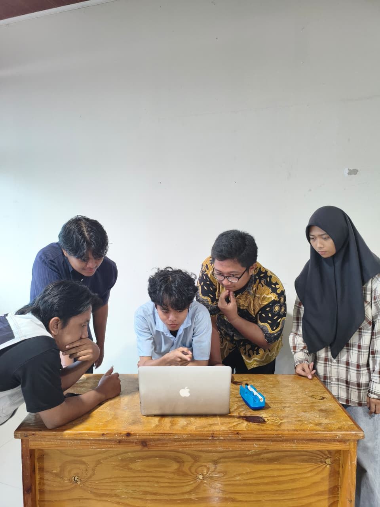

Projek Manajemen Proyek Bisnis berbasis Website "Samba BOA Leuwiliang"
Project Lead / Project Manager (Mar 2026 - Jul 2026)



- Memimpin perencanaan dan koordinasi tim dalam pengembangan proyek website untuk mendukung kebutuhan bisnis Sambal BOA Leuwiliang.
- Membagi tugas, memantau progres dan memastikan setiap bagian proyek berjalan sesuai tujuan dan timeline tim.
- Menghubungkan kebutuhan bisnis dengan rancangan solusi digital serta menyiapkan materi untuk presentasi dan evaluasi proyek.